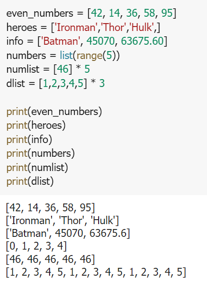
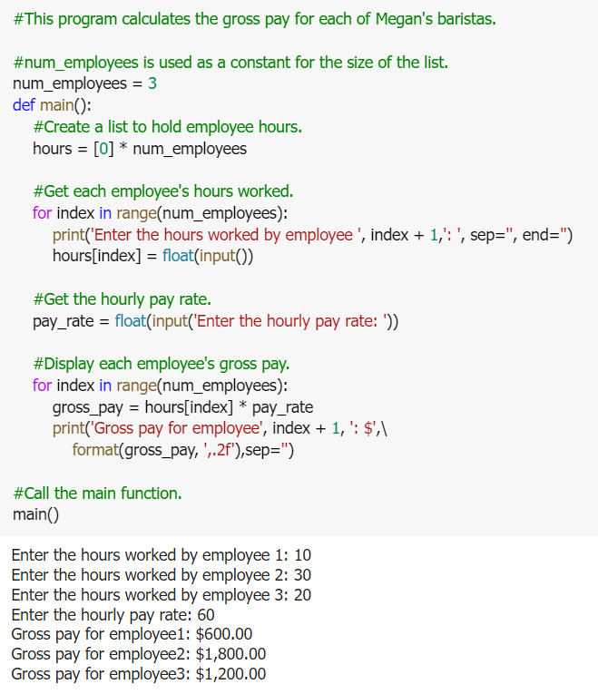
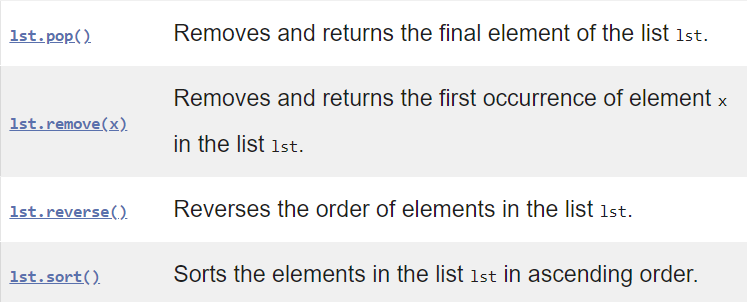
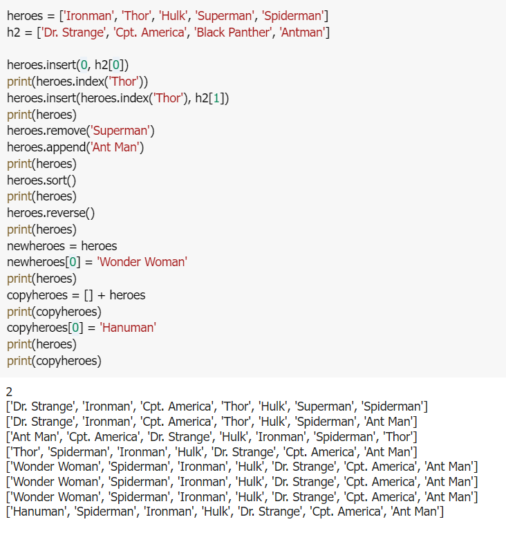
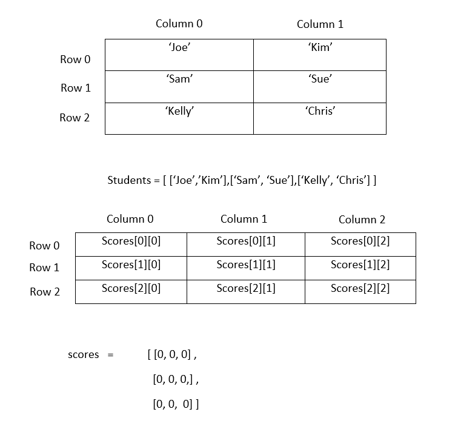
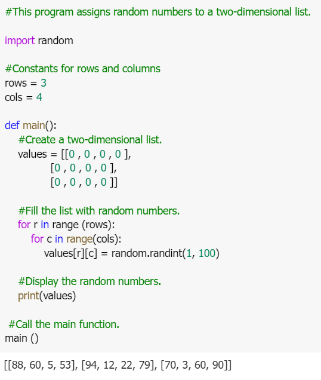

LISTS AND TUPLES
introduction
Sequences
In Python programming, sequences are a generic term for an ordered set which means that the order in which we input the items will be the same when we access them.
Python supports six different types of sequences. These are strings, lists, tuples, byte sequences, byte arrays, and range objects. We will discuss each of them.
- List is mutable, which means that a program can change its contents.
Python lists are similar to an array but they allow us to create a heterogeneous collection of items inside a list. A list can contain numbers, strings, lists, tuples, dictionaries, objects, etc.
Tuples are also a sequence of Python objects. A tuple is created by separating items with a comma. They can be optionally put inside the parenthesis () but it is necessary to put parenthesis in an empty tuple.
List
A list in Python is used to store the sequence of various types of data. Python lists are mutable type its mean we can modify its element after it created. However, Python consists of six data-types that are capable to store the sequences, but the most common and reliable type is the list.
A list can be defined as a collection of values or items of different types. The items in the list are separated with the comma (,) and enclosed with the square brackets [].
A list can be define as below
- List: an object that contains multiple data items
- Element: An item in a list
- Format: list = [item1, item2, etc.]
- Can hold items of different types
- print function can be used to display an entire list
- list() function can convert certain types of objects to lists
Example list
List Methods and Useful Built-in Functions
List Operator
- Repetition operator:makes multiple copies of a list and joins them together
- The * symbol is a repetition operator when applied to asequence and an integer
- Sequence is left operand, number is right
- General format: list * n
- Format: for x in list:

List Methods And Useful Built-In Functions
- An IndexError exception is raised if an invalid index is used
- len function: returns the length of a sequence such as a list
- Example: size = len(my_list)
- Returns the number of elements in the list, so the index of last element is len(list)-1
- Can be used to prevent an IndexError exception when iterating over a list with a loop
List Methods And Useful Built-In Functions
- You can use the in operator to determine whether an item is contained in a list
- General format: item in list
- Returns True if the item is in the list, or False if it is not in the list
- Similarly you can use the not in operator to determine whether an item is not in a list

Example Listmethods
two-dimensional lists
- Two-dimensional list: a list that contains other lists as its elements
- Also known as nested list
- Common to think of two-dimensional lists as having rows and columns
- Useful for working with multiple sets of data
- To process data in a two-dimensional list need to use two indexes
- Typically use nested loops to process
Two-Dimensional Lists

tuples
Introduction